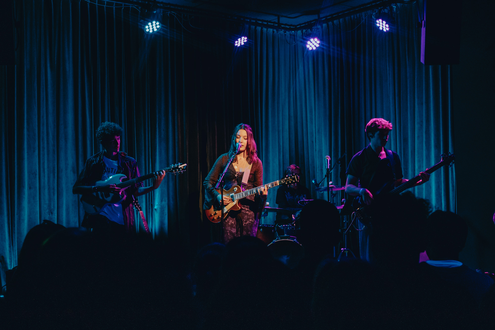
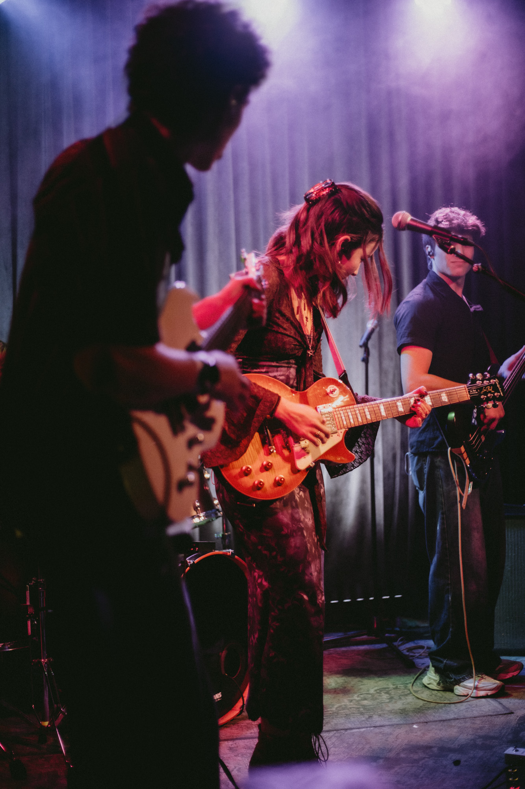

Emerging from New Zealand's indie scene, at an age when most are still finding their voice, 18-year-old Maddy Low already speaks fluently through music that alternates between honest vulnerability and free-spirited celebration. Based between Wellington and Auckland, her songwriting captures the genuine emotions of early adulthood through a distinctive blend of indie, folk, and pop sensibilities, infused with the raw energy of classic rock that surfaces in her impressive guitar work.
Read more
New Release
About Maddy

×
Emerging from New Zealand's indie scene, at an age when most are still finding their voice, 18-year-old Maddy Low already speaks fluently through music that alternates between honest vulnerability and free-spirited celebration. Based between Wellington and Auckland, her songwriting captures the genuine emotions of early adulthood through a distinctive blend of indie, folk, and pop sensibilities, infused with the raw energy of classic rock that surfaces in her impressive guitar work.
“Half my music feels like laying down looking at the ceiling, just contemplating life,” Maddy says, “and the other half makes you want to dance around in the sunshine.”
Since first busking at age 13, Maddy has developed a natural ability to connect with audiences, whether on street corners or during live gigs. That same authenticity shines through on her YouTube channel, where her own distinctive interpretations of artists like Amy Winehouse, The Cranberries, Olivia Rodrigo, and Sublime have attracted thousands of views and a steadily growing following.
Quickly progressing in her recording career, Maddy has already begun to show a rare musical intuition and lyrical sensitivity in her original work. Her recent signing with Timeless Records marks a pivotal step, with 2025 set to showcase her voice through a series of releases.
Her latest single “Games” offers a playful exploration of modern relationships with an infectious melody, while the upcoming “To Be Near” showcases her depth with a harmony-rich reflection on unexpected love. This range is part of what makes Maddy’s music so compelling—the ability to move between introspective vulnerability and joyful energy with equal authenticity.
In 2024, Maddy demonstrated her versatility by serving as music director for the indie feature-film “Chasing Stars.” Her contributions included “What If I Told You” and “Willow’s Song,” with the latter earning two festival awards for Best Original Song. This international recognition proved her music resonates far beyond New Zealand’s shores.
What sets Maddy apart isn’t just her talent, but her genuine approach to music as a way of connecting. She doesn’t demand attention—she invites you in, whether through a quiet ballad or an uplifting melody that stays with you long after the last note.
With her growing audience, a clear creative voice, and the support of Timeless Records, 2025 is shaping up to be a breakthrough year for this emerging artist—whose music feels both timeless and completely of the moment.
Maddy on YouTube
Recent Press
Maddy on Spotify




Connect with Maddy